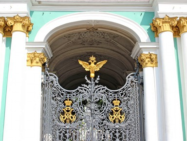

Музей истории
Музей работает по специальным правилам:
- Посещение музея строго по сеансам.
- Количество посетителей на каждый сеанс ограничено.
- Для визита в музей билеты строго рекомендуется приобретать онлайн. При оформлении билета, в календаре вы видите свободные слоты для посещения. Отсутствие означает, что все билеты на сеанс проданы. Выберите другую дату. В кассы музея поступают только те билеты, которые не были проданы онлайн.
Экскурсии в Музей истории
-
 Экскурсия в мир искусства
Экскурсия в мир искусства
Вас ждут коллекции античного и египетского залов, а также погружение в культуру Западной Европы — мы разберем на детали сюжеты полотен, проникнем в тайны живописи и поговорим о творческом пути художников.
Экскурсия в мини-группе (билеты включены)
-

Доступно, интересно и по чуть-чуть обо всем — это о экскурсии в наш Музей истории. Вы пройдете по парадными залам, выясните, где скрываются потайные коридоры и где живут пушистые служители музея. Изучите картины великих гениев от Да Винчи до Рембрандта, узнаете об их истории и сюжетах. Вопросы на экскурсии приветствуются!
Музей для детей и взрослых
-
Вместе мы изучим парадные залы — вы станете активными участниками поиска сокровищ. Формат диалога увлечет детей любого возраста: экскурсовод расскажет об истории музея и особенностях интерьеров так, чтобы не отбить у ребенка охоту к «вылазкам» в мир искусства.